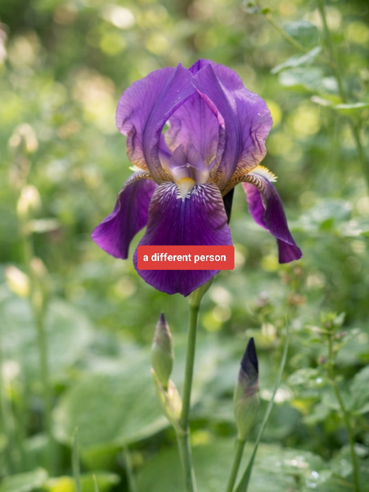
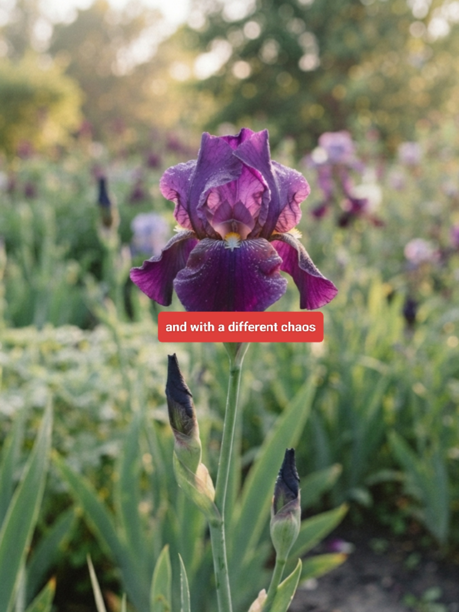
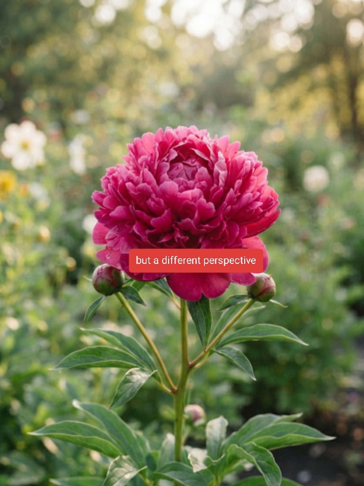
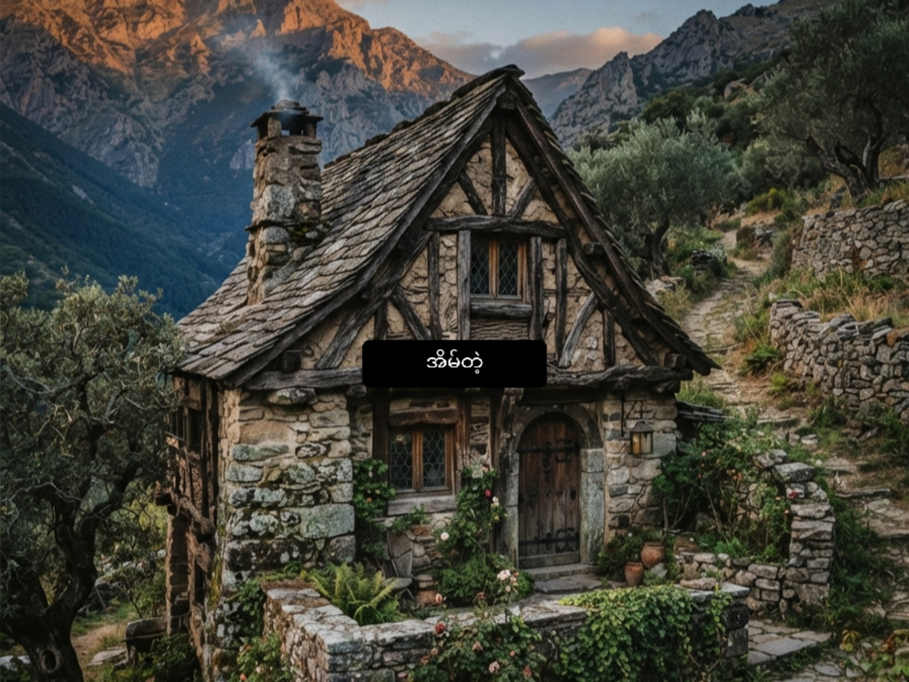
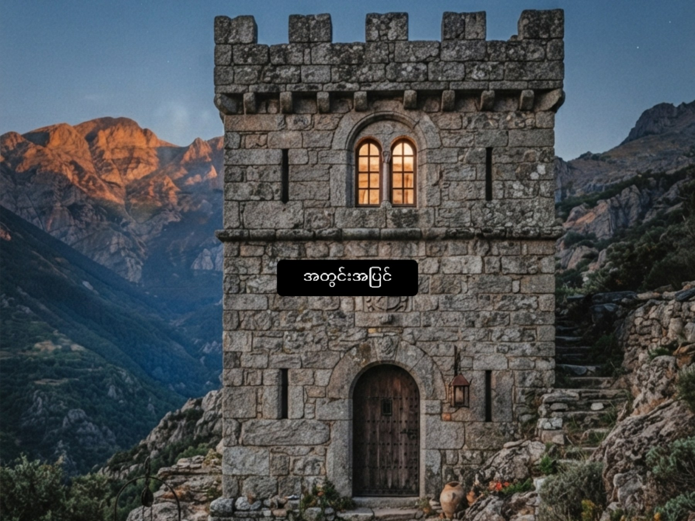
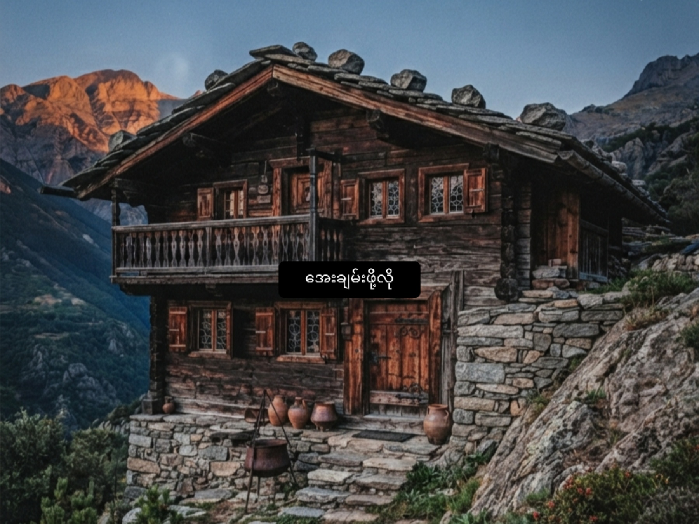
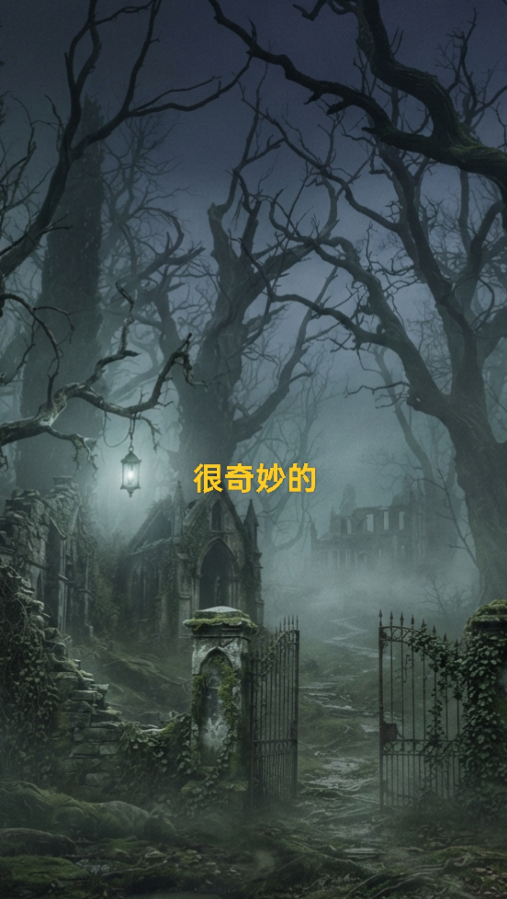
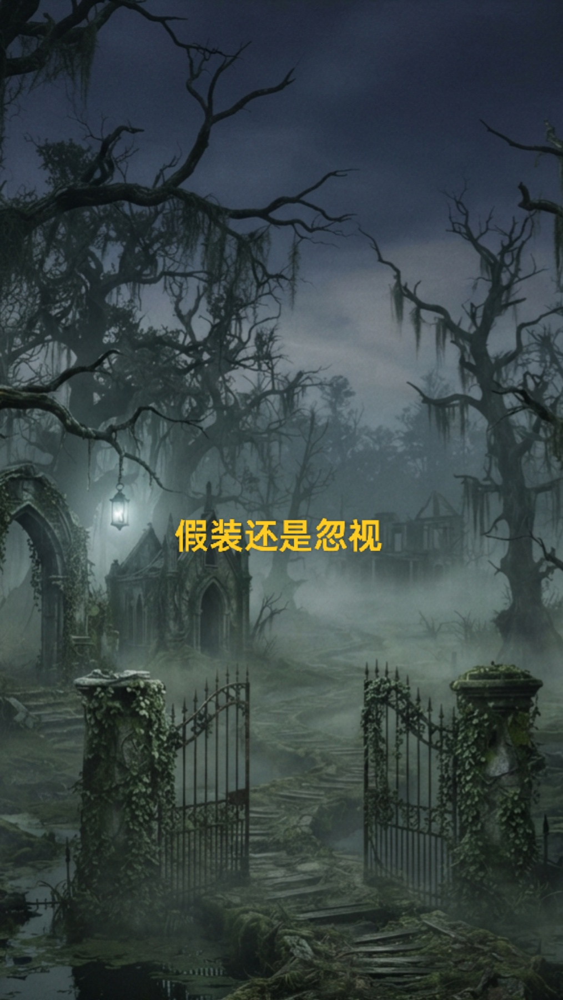

Venus
Chapter 1 · 3 Episodes
Chapter 1 (ongoing)
- Episode 1 – First Light
- Episode 2 – The Signal
- Episode 3 – Descent



comics · novel · short stories
Chapter 1 · 3 Episodes
Chapter 1 (ongoing)



Chapter 1 · 3 Episodes
Chapter 1 (ongoing)



Chapter 1 · 3 Episodes
Chapter 1 (ongoing)



The village of the guardian spirits
2 Chapters · 8 Parts
ရွာကို ချောင်းကြီးတစ်ခုက ကွေးကွေးဝိုက်ဝိုက် ဖြတ်သွားတယ်။ ချောင်းရေက ညို့ညို့နက်နက်နဲ့ တစ်ခါတလေ အောက်ကနေ တစ်ခုခု ပေါ်လာလိုက်မလားဆိုတဲ့ ခံစားချက်မျိုး ပေးတယ်။ ရွာနာမည်က သူ့အလိုလို ပေါ်လာတာ။ ဘယ်သူမှ ဘယ်တုန်းက စခေါ်လဲ မသိ။ ဥစ္စာစောင့်တို့ရွာ။ ရွာထဲမှာ အိမ်ခြေ သုံးဆယ်လောက်ပဲ ရှိတယ်။ လူတွေက လယ်ယာလုပ်တယ်။ တစ်ချို့က ချောင်းထဲမှာ ငါးဖမ်းတယ်။ ဒါပေမဲ့ ညနေစောင်းလို့ နေဝင်ချိန်ရောက်ရင် ဘယ်သူမှ ချောင်းဘက်ကို မကြည့်ရဲဘူး။ ကြည့်ရင် မကောင်းဘူးလို့ ယုံကြည်ကြတယ်။ ရွာထဲမှာ အသက်အကြီးဆုံးလူက ဦးဖိုးသား။ သူက ရွာရဲ့ သမိုင်းကို ပြောပြလေ့ရှိတယ်။ ဒါပေမဲ့ ဥစ္စာစောင့်အကြောင်း မေးရင်တော့ သူ နှုတ်ဆိတ်သွားတယ်။ မျက်လုံးတွေ ပြူးလာတယ်။ ပြီးတော့ "မမေးနဲ့" ဆိုပြီး ထသွားတယ်။ မောင်လှက အသက် ဆယ့်ခုနစ်နှစ်။ သူက ရွာသူရွာသားတွေထက် စိတ်ရဲတယ်။ ရွာရဲ့ လျှို့ဝှက်ချက်တွေကို သိချင်တယ်။ ဘာကြောင့် ညဘက်ဆို လူတွေ အိမ်တံခါး မဖွင့်ကြတာလဲ။ ဘာကြောင့် ချောင်းဘက်ကို မကြည့်ရဲကြတာလဲ။ ဘာကြောင့် ရွာကို ဥစ္စာစောင့်တို့ရွာလို့ ခေါ်တာလဲ။ သူ့အမေက သူ့ကို ညတိုင်း သတိပေးတယ်။ "ညဘက် အပြင်မထွက်နဲ့။ ချောင်းဘက်ကို မသွားနဲ့။ ဥစ္စာစောင့်တွေ နိုးနေတယ်။" "ဥစ္စာစောင့်ဆိုတာ ဘာလဲ အမေ" "မမေးနဲ့။ ငါပြောတာ နားထောင်။" မောင်လှ နားမထောင်ခဲ့ဘူး။
ရွာရဲ့ အလယ်မှာ ရေတွင်းဟောင်းကြီးတစ်ခု ရှိတယ်။ ဘယ်သူမှ ရေမခပ်ဘူး။ တွင်းပေါက်ကို သစ်သားပျဉ်တွေနဲ့ ဖုံးထားတယ်။ ကြိုးဟောင်းတွေ ချည်ထားတယ်။ ကြိုးတွေက ဆွေးနေပြီ။ ဒါပေမဲ့ ဘယ်သူမှ မဖြုတ်ရဲဘူး။ ဦးဖိုးသားတစ်ယောက်ပဲ တစ်ခါတလေ တွင်းနားကို သွားပြီး စကားပြောတယ်။ တစ်ခုခုကို ပြောသလိုပဲ။ သူ့ရဲ့ အသံက တိုးတိုးလေး။ "ငါတို့ မင်းတို့ကို မထိဘူး။ မင်းတို့လည်း ငါတို့ကို မထိပါဘူး။" မောင်လှ တစ်ခါက ဦးဖိုးသားကို မေးဖူးတယ်။ "ဦးလေး ဘယ်သူ့ကို ပြောနေတာလဲ" ဦးဖိုးသား လှည့်ကြည့်တယ်။ သူ့မျက်လုံးတွေက နီရဲနေတယ်။ "ငါတို့ရွာမှာ ငါတို့တစ်ခုတည်း မနေဘူးကွ။ ငါတို့အောက်မှာ တစ်ခြားဟာတွေ ရှိတယ်။ သူတို့က ငါတို့ရဲ့ ဥစ္စာကို စောင့်နေတယ်။ ငါတို့ သူတို့ကို မထိရင် သူတို့ ငါတို့ကို မထိဘူး။" "ဥစ္စာဆိုတာ ဘာလဲ" "ငါတို့ရွာရဲ့ အောက်မှာ ရှိတယ်။ ရတနာတွေ။ ရွှေတွေ။ ကျောက်တွေ။ အရင်တုန်းက လူတွေ မြေမြုပ်ထားတယ်။ အဲဒါကို စောင့်နေတဲ့ဟာတွေ ရှိတယ်။" "ဘယ်သူတွေလဲ" "မပြောတော့ဘူး။ မင်း သိရင် မင်း ပြီးပြီ။" ဦးဖိုးသား ထသွားတယ်။ မောင်လှ တစ်ယောက် တွင်းနားမှာ ကျန်ခဲ့တယ်။ သူ တွင်းထဲကို နားထောင်ကြည့်တယ်။ ဘာမှ မကြားဘူး။ ဒါပေမဲ့ တစ်ခုခု ရှိနေတယ်လို့ သူ ခံစားရတယ်။
အဲဒီညက လကွယ်ည။ ကောင်းကင်မှာ ကြယ်တွေ မရှိဘူး။ မောင်လှ အိပ်မပျော်ဘူး။ သူ့အမေ အိပ်နေပြီ။ သူ ထပြီး တံခါးကို ဖွင့်တယ်။ အပြင်မှာ မှောင်နေတယ်။ လေက အေးစိမ့်စိမ့်။ သူ ချောင်းဘက်ကို လျှောက်သွားတယ်။ ခြေသံက တိုးတိုး။ ရေသံက ဝေဝေးဝေး။ ချောင်းနားရောက်တော့ သူ ရပ်တယ်။ ရေက နက်တယ်။ မှောင်တယ်။ သူ ရေထဲကို ကြည့်တယ်။ ရေထဲမှာ မျက်နှာတစ်ခု ပေါ်လာတယ်။ သူ့မျက်နှာ မဟုတ်ဘူး။ တစ်ခြားဟာ။ မျက်လုံးတွေ ဖွင့်ထားတယ်။ ပါးစပ် ဖွင့်ထားတယ်။ သူ ကြောက်သွားတယ်။ နောက်ဆုတ်တယ်။ ဒါပေမဲ့ မျက်နှာက ရေထဲကနေ ပေါ်လာတယ်။ ကိုယ်ခန္တာလည်း ပေါ်လာတယ်။ လက်တွေ။ ခြေတွေ။ သူ ထပြေးတယ်။ အိမ်ကို ပြန်ပြေးတယ်။ တံခါးကို ဆွဲဖွင့်တယ်။ ဝင်တယ်။ တံခါးကို ဆွဲပိတ်တယ်။ သူ့နှလုံးခုန်သံက ကျယ်လောင်တယ်။ အဲဒီအခါ အပြင်မှာ ခြေသံတွေ ကြားရတယ်။ လျှောက်လာတဲ့ ခြေသံ။ သူ့အိမ်ရှေ့မှာ ရပ်သွားတယ်။ ပြီးတော့ တစ်ခုခုက တံခါးကို ခေါက်တယ်။ တိုးတိုး။ သုံးချက်။ ပြီးတော့ နောက်သုံးချက်။ မောင်လှ အသက်မရှူရဲဘူး။
မနက်ရောက်တော့ မောင်လှ အိမ်ထဲက မထွက်ရဲဘူး။ သူ့အမေက သူ့ကို ကြည့်တယ်။ "မျက်နှာက ဘာလို့ ဖြူနေတာလဲ" "ဘာမှ မဟုတ်ဘူး" "ညက အပြင်ထွက်လား" "မထွက်ဘူး" သူ့အမေ သူ့ကို စိုက်ကြည့်တယ်။ ပြီးတော့ သက်ပြင်းချတယ်။ "ငါ မင်းကို သတိပေးခဲ့တယ်။ မင်း နားမထောင်ဘူး။ အခု မင်း သူတို့ကို မြင်ပြီးပြီ။ သူတို့လည်း မင်းကို မြင်ပြီးပြီ။" "သူတို့က ဘယ်သူတွေလဲ အမေ" "ဥစ္စာစောင့်တွေ။ ငါတို့ရွာရဲ့ အောက်မှာ ရတနာတွေ ရှိတယ်။ အဲဒါကို စောင့်နေတဲ့ဟာတွေ။ သူတို့က ငါတို့ကို မထိဘူး။ ငါတို့ သူတို့ကို မထိရင်။ ဒါပေမဲ့ မင်း သူတို့ကို မြင်သွားပြီ။ အခု သူတို့ မင်းကို လိုက်နေပြီ။" မောင်လှ တုန်တုန်ယင်ယင် ထထိုင်တယ်။ "ဘာလုပ်ရမလဲ" "ဦးဖိုးသားဆီ သွား။ သူပဲ သိတယ်။" မောင်လှ ဦးဖိုးသားအိမ်ကို သွားတယ်။ ဦးဖိုးသား တံခါးနားမှာ ထိုင်နေတယ်။ သူ့မျက်နှာက ပိန်ချုံးနေတယ်။ "မင်း သူတို့ကို မြင်ပြီးပြီလား" "ဟုတ်" "ငါ မင်းကို သတိပေးခဲ့တယ်။ ဒါပေမဲ့ မင်း ငါ့စကား နားမထောင်ဘူး။ အခု မင်း ရတနာလမ်းကို လျှောက်ရမယ်။" "ရတနာလမ်းဆိုတာ ဘာလဲ" "ငါတို့ရွာရဲ့ အောက်မှာ လမ်းတွေ ရှိတယ်။ ရတနာတွေ သိမ်းထားတဲ့ လမ်းတွေ။ ဥစ္စာစောင့်တွေ စောင့်နေတဲ့ လမ်းတွေ။ မင်း အဲဒီလမ်းကို လျှောက်ရမယ်။ သူတို့ကို ပြန်တွေ့ရမယ်။ ပြီးတော့ သူတို့ကို တောင်းပန်ရမယ်။" "ဘယ်လိုလုပ်ရမလဲ" "ညနေ နေဝင်ချိန်မှာ ရေတွင်းနားကို သွား။ ပျဉ်တွေ ဖြုတ်။ တွင်းထဲကို ဆင်း။ အောက်မှာ လမ်းတွေ ရှိတယ်။ မင်း လျှောက်ရမယ်။ ဘာကိုမှ မထိရဘူး။ ဘာကိုမှ မယူရဘူး။ သူတို့ကို တောင်းပန်ပြီး ပြန်တက်လာ။" မောင်လှ ကြောက်တယ်။ ဒါပေမဲ့ တစ်ခြားလမ်း မရှိဘူး။
ညနေ နေဝင်ချိန်။ မောင်လှ ရေတွင်းနားကို ရောက်တယ်။ ပျဉ်တွေ ဖြုတ်တယ်။ တွင်းထဲကို ကြည့်တယ်။ မှောင်နေတယ်။ အနံ့တစ်ခု ရတယ်။ စိုစိုစိမ့်စိမ့်။ မြေအနံ့။ သင်္ချိုင်းအနံ့လိုပဲ။ သူ ကြိုးကို ဆွဲပြီး ဆင်းတယ်။ အောက်ရောက်တော့ မှောင်နေတယ်။ သူ့မှာ မီးအိမ်လေး ပါလာတယ်။ မီးညှိလိုက်တော့ အလင်းလေး ရတယ်။ သူ လမ်းတစ်ခုကို တွေ့တယ်။ မြေအောက်လမ်း။ ကျဉ်းတယ်။ နံရံတွေမှာ ရေးထားတဲ့ စာတွေ ရှိတယ်။ ရှေးဟောင်း စာတွေ။ သူ မဖတ်တတ်ဘူး။ သူ လျှောက်တယ်။ လမ်းက ကွေးတယ်။ ဝိုက်တယ်။ တစ်ခါတလေ ခွဲထွက်တယ်။ သူ မှတ်ထားတယ်။ ဘယ်ဘက်။ ညာဘက်။ ဘယ်ဘက်။ ရုတ်တရက် သူ တစ်ခုခုကို တွေ့တယ်။ အခန်းတစ်ခု။ ကျယ်တယ်။ အထဲမှာ သေတ္တာတွေ။ အိုးတွေ။ ရွှေတွေ။ ကျောက်တွေ။ ရတနာတွေ။ သူ့မျက်လုံးတွေ ပြူးသွားတယ်။ သူ လက်ကို ဆန့်တယ်။ ဒါပေမဲ့ ဦးဖိုးသားစကား ပြန်မှတ်မိတယ်။ "ဘာကိုမှ မထိရဘူး။" သူ လက်ကို ပြန်ရုတ်တယ်။ ပြီးတော့ သူ ရှေ့ဆက် လျှောက်တယ်။
သူ လျှောက်ရင်း လျှောက်ရင်း တစ်နေရာကို ရောက်တယ်။ အဲဒီမှာ ရေတွင်းတစ်ခု ရှိတယ်။ မြေအောက်ရေတွင်း။ ရေက နက်တယ်။ မှောင်တယ်။ သူ ရေထဲကို ကြည့်တယ်။ ရေထဲမှာ မျက်နှာတွေ။ အများကြီး။ သူ့ကို ကြည့်နေတယ်။ မျက်လုံးတွေ။ ပါးစပ်တွေ။ လက်တွေ။ သူ ကြောက်တယ်။ ဒါပေမဲ့ သူ မထပြေးဘူး။ ဦးဖိုးသား ပြောခဲ့တယ်။ "သူတို့ကို တောင်းပန်ရမယ်။" သူ ဒူးထောက်တယ်။ "ကျွန်တော် တောင်းပန်ပါတယ်။ ကျွန်တော် မင်းတို့ကို မထိချင်ဘူး။ ကျွန်တော် မင်းတို့ဥစ္စာကို မယူချင်ဘူး။ ကျွန်တော် ပြန်သွားချင်တယ်။" ရေထဲက မျက်နှာတွေ ငြိမ်သွားတယ်။ ပြီးတော့ တစ်ခုခု ပေါ်လာတယ်။ လူတစ်ယောက်။ ရေထဲကနေ တက်လာတယ်။ သူ့ကို ကြည့်တယ်။ "မင်း ငါတို့ကို မြင်ပြီးပြီ။ ငါတို့လည်း မင်းကို မြင်ပြီးပြီ။ မင်း ငါတို့ကို တောင်းပန်ပြီးပြီ။ ငါတို့ မင်းကို လွှတ်မယ်။ ဒါပေမဲ့ မင်း ငါတို့အကြောင်း ဘယ်သူ့ကိုမှ မပြောရဘူး။" "ဟုတ်ကဲ့" "မင်း ပြန်သွား။ ဒီလမ်းကို ပြန်လျှောက်။ ဘာကိုမှ မထိနဲ့။" မောင်လှ ပြန်လျှောက်တယ်။ သူ့နှလုံးခုန်သံ ကျယ်လောင်တယ်။ သူ ရေတွင်းရှိရာ ပြန်ရောက်တယ်။ ကြိုးကို ဆွဲပြီး တက်တယ်။ အပေါ်ရောက်တော့ ကောင်းကင်မှာ ကြယ်တွေ ပေါ်နေပြီ။ သူ အိမ်ကို ပြန်ပြေးတယ်။
အိမ်ရောက်တော့ သူ့အမေ သူ့ကို စောင့်နေတယ်။ "ဘာဖြစ်လဲ" "ဘာမှ မဟုတ်ဘူး" "မင်း ရေတွင်းထဲ ဆင်းလား" မောင်လှ မဖြေဘူး။ သူ့အမေ သူ့ကို ဖက်တယ်။ "မင်း အသက်ရှင်လာတာ ကံကောင်းတယ်။ ငါ မင်းကို ဆုံးမခဲ့တယ်။ နောက်တစ်ခါ မလုပ်နဲ့။" အဲဒီည မောင်လှ အိပ်ပျော်တယ်။ ဒါပေမဲ့ သူ အိပ်မက်မက်တယ်။ အိပ်မက်ထဲမှာ သူ ရေတွင်းထဲ ပြန်ရောက်နေတယ်။ မျက်နှာတွေ သူ့ကို ကြည့်နေတယ်။ သူ နိုးတယ်။ ချွေးတွေ ရွှဲနေတယ်။ သူ ထထိုင်တယ်။ မီးအိမ်ကို ညှိတယ်။ မီးရောင်အောက်မှာ သူ့လက်ကို ကြည့်တယ်။ သူ့လက်မှာ တစ်ခုခု ရှိနေတယ်။ ရွှေစတစ်ခု။ သူ မယူခဲ့ဘူး။ ဒါပေမဲ့ သူ့လက်မှာ ရှိနေတယ်။ သူ ထိတ်လန့်သွားတယ်။ ရွှေစကို ပစ်ချင်တယ်။ ဒါပေမဲ့ မပစ်ရဲဘူး။ သူ သေတ္တာထဲမှာ ထည့်ထားလိုက်တယ်။ အဲဒီအခါ အပြင်မှာ ခြေသံတွေ ကြားရတယ်။ လျှောက်လာတဲ့ ခြေသံ။ သူ့အိမ်ရှေ့မှာ ရပ်သွားတယ်။ ပြီးတော့ တံခါးကို ခေါက်တယ်။ တိုးတိုး။ သုံးချက်။
မောင်လှ တံခါးကို မဖွင့်ဘူး။ ခြေသံတွေ ပြန်လျှောက်သွားတယ်။ သူ သက်ပြင်းချတယ်။ ဒါပေမဲ့ နောက်တစ်နေ့မနက် သူ ထထွက်တော့ ရွာထဲမှာ ဘာမှ မပြောင်းလဲဘူး။ လူတွေ လယ်လုပ်တယ်။ ငါးဖမ်းတယ်။ ဒါပေမဲ့ သူ့ကို ကြည့်တဲ့ မျက်လုံးတွေ ပြောင်းသွားတယ်။ ဦးဖိုးသား သူ့ကို လှမ်းခေါ်တယ်။ "မင်း ပြန်လာပြီးပြီလား" "ဟုတ်" "သူတို့ မင်းကို လွှတ်ပြီးပြီလား" "ဟုတ်" "ဒါပေမဲ့ မင်း သူတို့ဥစ္စာ တစ်ခုခု ယူလာခဲ့တယ် မဟုတ်လား" မောင်လှ မျက်လုံးပြူးသွားတယ်။ "ဘယ်လိုသိလဲ" "ငါ သိတယ်။ မင်း မယူချင်ဘူး။ ဒါပေမဲ့ မင်း ယူလာခဲ့တယ်။ သူတို့ မင်းကို လွှတ်တာ မဟုတ်ဘူး။ သူတို့ မင်းကို စမ်းသပ်တာ။ မင်း ကျရှုံးတယ်။" "ဘာလုပ်ရမလဲ" "မင်း ရွှေစကို ပြန်ပေးရမယ်။ ဒါပေမဲ့ မင်း တစ်ယောက်တည်း ပြန်မသွားနဲ့။ ငါ လိုက်သွားမယ်။" ညနေ နေဝင်ချိန်။ ဦးဖိုးသားနဲ့ မောင်လှ ရေတွင်းနားကို သွားတယ်။ ဦးဖိုးသား ပျဉ်တွေ ဖြုတ်တယ်။ သူတို့ ဆင်းတယ်။ လမ်းကို လျှောက်တယ်။ ရေတွင်းနက်ကြီးရှိရာ ရောက်တယ်။ ဦးဖိုးသား ရေထဲကို ကြည့်တယ်။ "ငါတို့ ပြန်လာပြီ။ ငါတို့ မင်းတို့ဥစ္စာ ယူလာခဲ့တယ်။ ပြန်ပေးမယ်။" မောင်လှ ရွှေစကို ထုတ်တယ်။ ရေထဲကို ပစ်ချတယ်။ ရေက ငြိမ်သွားတယ်။ ပြီးတော့ မျက်နှာတွေ ပေါ်လာတယ်။ သူတို့ ပြုံးတယ်။ ပြီးတော့ ပျောက်သွားတယ်။ ဦးဖိုးသား သက်ပြင်းချတယ်။ "ကဲ ပြန်တက်ကြရအောင်။" သူတို့ ပြန်တက်တယ်။ အပေါ်ရောက်တော့ ဦးဖိုးသား ပျဉ်တွေ ပြန်ဖုံးတယ်။ ပြီးတော့ မောင်လှကို ကြည့်တယ်။ "မင်း သိပြီးပြီ။ ငါတို့ရွာရဲ့ လျှို့ဝှက်ချက်။ ငါတို့ရွာရဲ့ ဥစ္စာစောင့်တွေ။ သူတို့က ငါတို့ကို မထိဘူး။ ငါတို့ သူတို့ကို မထိရင်။ ဒါပေမဲ့ ငါတို့ သူတို့ကို မမေ့ရဘူး။ ငါတို့ သူတို့ကို လေးစားရမယ်။" မောင်လှ ခေါင်းညိတ်တယ်။ သူ ရွာကို ပြန်ကြည့်တယ်။ နေဝင်ချိန်။ မှောင်လာပြီ။ ဒါပေမဲ့ သူ မကြောက်တော့ဘူး။ သူ သိတယ်။ သူတို့ ရွာမှာ သူတို့တစ်ခုတည်း မနေဘူး။ သူတို့အောက်မှာ တစ်ခြားဟာတွေ ရှိတယ်။ သူတို့က ဥစ္စာကို စောင့်နေတယ်။ သူတို့က ရွာကို စောင့်နေတယ်။ ဒါက ဥစ္စာစောင့်တို့ရွာ။